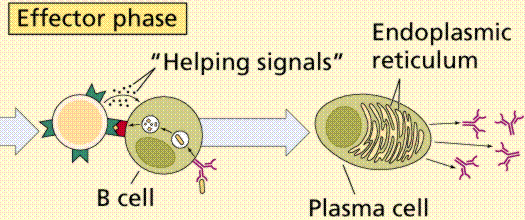
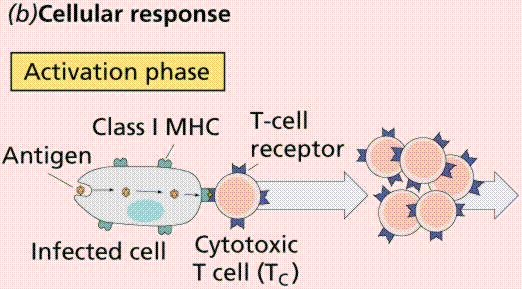
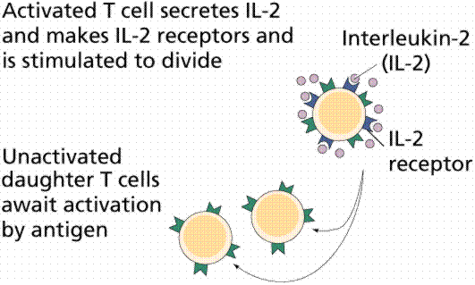
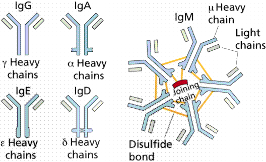
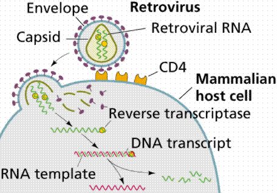
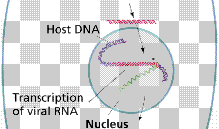
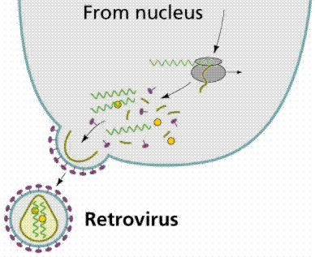

Antibody-mediated Immunity | Blood Types, Rh, and Antibodies
Organ Transplants and Antibodies | Allergies and Disorders of the Immune System
The lymphatic system is composed of lymph vessels, lymph nodes, and organs. The functions of this system include the absorbtion of excess fluid and its return to the blood stream, absorption of fat (in the villi of the small intestine) and the immune system function.
Lymph vessels are closely associated with the circulatory system vessels. Larger lymph vessels are similar to veins. Lymph capillaries are scatted throughout the body. Contraction of skeletal muscle causes movement of the lymph fluid through valves.
Lymph organs include the bone marrow, lymph nodes, spleen, and thymus. Bone marrow contains tissue that produces lymphocytes. B-lymphocytes (B-cells) mature in the bone marrow. T-lymphocytes (T-cells) mature in the thymus gland. Other blood cells such as monocytes and leukocytes are produced in the bone marrow. Lymph nodes are areas of concentrated lymphocytes and macrophages along the lymphatic veins. The spleen is similar to the lymph node except that it is larger and filled with blood. The spleen serves as a reservoir for blood, and filters or purifies the blood and lymph fluid that flows through it. If the spleen is damaged or removed, the individual is more susceptible to infections. The thymus secretes a hormone, thymosin, that causes pre-T-cells to mature (in the thymus) into T-cells.
Immunity is the body's capability to repel foreign substances and cells. The nonspecific responses are the first line of defense. Highly specific responses are the second line of defense and are tailored to an individual threat. The immune response includes both specific and nonspecific components. Nonspecific responses block the entry and spread of disease-causing agents. Antibody-mediated and cell-mediated responses are two types of specific response. The immune system is associated with defense against disease-causing agents, problems in transplants and blood transfusions, and diseases resulting from over-reaction (autoimmune, allergies) and under-reaction (AIDS).
Barriers to entry are the skin and mucous membranes. The skin is a passive barrier to infectious agents such as bacteria and viruses. The organisms living on the skin surface are unable to penetrate the layers of dead skin at the surface. Tears and saliva secrete enzymes that breakdown bacterial cell walls. Skin glands secrete chemicals that retard the growth of bacteria. Mucus membranes lining the respiratory, digestive, urinary, and reproductive tracts secrete mucus that forms another barrier. Physical barriers are the first line of defense.
When microorganisms penetrate skin or epithelium lining respiratory, digestive, or urinary tracts, inflammation results. Damaged cells release chemical signals such as histamine that increase capillary blood flow into the affected area (causing the areas to become heated and reddened). The heat makes the environment unfavorable for microbes, promotes healing, raises mobility of white blood cells, and increases the metabolic rate of nearby cells. Capillaries pass fluid into interstitial areas, causing the infected/injured area to swell. Clotting factors trigger formation of many small blood clots. Finally, monocytes (a type of white blood cell) clean up dead microbes, cells, and debris.
The inflammatory response is often strong enough to stop the spread of disease-causing agents such as viruses, bacteria, and fungi. The response begins with the release of chemical signals and ends with cleanup by monocytes. If this is not enough to stop the invaders, the complement system and immune response act.
Protective proteins that are produced in the liver include the complement system of proteins. The complement system proteins bind to a bacterium and open pores in its membrane through which fluids and salt move, swelling and bursting the cell.
The complement system directly kills microbes, supplements inflammatory response, and works with the immune response. It complements the actions of the immune system. Complement proteins are made in the liver and become active in a sequence (C1 activates C2, etc.). The final five proteins form a membrane-attack complex (MAC) that embeds itself into the plasma membrane of the attacker. Salts enter the invader, facilitating water to cross the membrane, swelling and bursting the microbe. Complement also functions in the immune response by tagging the outer surface of invaders for attack by phagocytes.
The complement system of proteins and their functioning. Image from Purves et al., Life: The Science of Biology, 4th Edition, by Sinauer Associates (www.sinauer.com) and WH Freeman (www.whfreeman.com), used with permission.
Interferon is a species-specific chemical produced by cells that are viral attack. It alerts nearby cells to prepare for a virus. The cells that have been contacted by interferon resist all viral attacks.
The immune system also generates specific responses to specific invaders.
The immune system is more effective than the nonspecific methods, and has a memory component that improves response time when an invader of the same type (or species) is again encountered.
Immunity results from the production of antibodies specific to a given antigen (antibody-generators, located on the surface of an invader). Antibodies bind to the antigens on invaders and kill or inactivate them in several ways. Most antibodies are themselves proteins or are a mix of protein and polysaccharides. Antigens can be any molecule that causes antibody production.
Lymphocytes
White blood cells known as lymphocytes arise from by mitosis of stem cells in the bone marrow. Some lymphocytes migrate to the thymus and become T cells that circulate in the blood and are associated with the lymph nodes and spleen. B cells remain in the bone marrow and develop before moving into the circulatory and lymph systems. B cells produce antibodies.
Macrophage Attacking E.coli (SEM x8,800). This image is copyright Dennis Kunkel at www.DennisKunkel.com, used with permission.
Antibody-mediated (humoral immunity)
Antibody-mediated (humoral) immunity is regulated by B cells and the antibodies they produce. Cell-mediated immunity is controlled by T cells. Antibody-mediated reactions defend against invading viruses and bacteria. Cell-mediated immunity concerns cells in the body that have been infected by viruses and bacteria, protect against parasites, fungi, and protozoans, and also kill cancerous body cells.
Human T-lymphocyte (SEM x12,080). This image is copyright Dennis Kunkel at www.DennisKunkel.com, used with permission.


The cell-mediated immune responses. Images from Purves et al., Life: The Science of Biology, 4th Edition, by Sinauer Associates (www.sinauer.com) and WH Freeman (www.whfreeman.com), used with permission.
Stages in this process are:
Each stage is directed by a specific cell type.
Macrophages
Macrophages are white blood cells that continually search for foreign (nonself) antigenic molecules, viruses, or microbes. When found, the macrophages engulfs and destroys them. Small fragments of the antigen are displayed on the outer surface of the macrophage plasma membrane.
The role of macrophages in the formation of antibodies. Image from Purves et al., Life: The Science of Biology, 4th Edition, by Sinauer Associates (www.sinauer.com) and WH Freeman (www.whfreeman.com), used with permission.
Helper T Cells
Helper T cells are macrophages that become activated when they encounter the antigens now displayed on the macrophage surface. Activated T cells identify and activate B cells.
The display path of an antigen as accomplished by a macrophage. Image from Purves et al., Life: The Science of Biology, 4th Edition, by Sinauer Associates (www.sinauer.com) and WH Freeman (www.whfreeman.com), used with permission.
B Cells
B cells divide, forming plasma cells and B memory cells. Plasma cells make and release between 2000 and 20,000 antibody molecules per second into the blood for the next four or five days. B memory cells live for months or years, and are part of the immune memory system.

The activation of T cells by the action of macrophages and interleukin-2. Images from Purves et al., Life: The Science of Biology, 4th Edition, by Sinauer Associates (www.sinauer.com) and WH Freeman (www.whfreeman.com), used with permission.
Antibodies
Antibodies bind to specific antigens in a lock-and-key fashion, forming an antigen-antibody complex. Antibodies are a type of protein molecule known as immunoglobulins. There are five classes of immunoglobulins: IgG, IgA, IgD, IgE, and IgM.

The five classes of Ig antibodies. Image from Purves et al., Life: The Science of Biology, 4th Edition, by Sinauer Associates (www.sinauer.com) and WH Freeman (www.whfreeman.com), used with permission.
Antibodies are Y-shaped molecules composed of two identical long polypeptide (Heavy or H chains) and two identical short polypeptides (Light or L chains). Function of antibodies includes:
Structural regions of an antibody molecule. Image from Purves et al., Life: The Science of Biology, 4th Edition, by Sinauer Associates (www.sinauer.com) and WH Freeman (www.whfreeman.com), used with permission.
A unique antigenic determinant recognizes and binds to a site on the antigen, leading to the destruction of the antigen in several ways. The ends of the Y are the antigen-combining site that is different for each antigen. Click here to learn more about the different classes of antibodies.
Formation of an antigen-antibody complex. Image from Purves et al., Life: The Science of Biology, 4th Edition, by Sinauer Associates (www.sinauer.com) and WH Freeman (www.whfreeman.com), used with permission.
Helper T cells activate B cells that produce antibodies. Supressor T cells slow down and stop the immune response of B and T cells, serving as an off switch for the immune system. Cytotoxic (or killer) T cells destroy body cells infected with a virus or bacteria. Memory T cells remain in the body awaiting the reintroduction of the antigen.
A cell infected with a virus will display viral antigens on its plasma membrane. Killer T cells recognize the viral antigens and attach to that cell's plasma membrane. The T cells secrete proteins that punch holes in the infected cell's plasma membrane. The infected cell's cytoplasm leaks out, the cell dies, and is removed by phagocytes. Killer T cells may also bind to cells of transplanted organs.
The immune system is the major component of this defense. Lymphocytes, monocytes, lymph organs, and lymph vessels make up the system. The immune system is able to distinguish self from non-self. Antigens are chemicals on the surface of a cell. All cells have these. The immune system checks cells and identifies them as "self" or "non-self". Antibodies are proteins produced by certain lymphocytes in response to a specific antigen. B-lymphocytes and T-lymphocytes produce the antibodies. B-lymphocytes become plasma cells which then generate antibodies. T-lymphocytes attack cells which bear antigens they recognize. They also mediate the immune response.
Secondary immunity, the resistance to certain diseases after having had them once, results from production of Memory B and T cells during the first exposure to the antigen. A second exposure to the same antigen produces a more massive and faster response. The secondary response is the basis for vaccination.
Vaccination
Vaccination is a term derived from the Latin vacca (cow, after the cowpox material used by Edward Jenner in the first vaccination). A vaccine stimulates the antibody production and formation of memory cells without causing of the disease. Vaccines are made from killed pathogens or weakened strains that cause antibody production but not the disease. Recombinant DNA techniques can now be used to develop even safer vaccines.
The immune system can develop long-term immunity to some diseases. Man can use this to develop vaccines, which produce induced immunity. Active immunity develops after an illness or vaccine. Vaccines are weakened (or killed) viruses or bacteria that prompt the development of antibodies. Application of biotechnology allows development of vaccines that are the protein (antigen) which in no way can cause the disease. Passive immunity is the type of immunity when the individual is given antibodies to combat a specific disease. Passive immunity is short-lived.
There are 30 or more known antigens on the surface of blood cells. These form the blood groups or blood types. In a transfusion, the blood groups of the recipient and donor must be matched. If improperly matched, the recipient's immune system will produce antibodies causing clotting of the transfused cells, blocking circulation through capillaries and producing serious or even fatal results.
ABO blood types are determined by a gene, I (for isoagglutinin). There are three alleles, IA, IB and IO. Proteins produced by the A and B alleles are antigenic. Individuals with blood type A have the A antigen on the surface of their red blood cells, and antibodies to type B blood in their plasma. People with blood type B have the B antigen on their blood cells and antibodies against type A in their plasma. Individuals with type AB blood produce have antigens for A and B on their cell surfaces and no antibodies for either blood type A or B in their plasma. Type O individuals have no antigens on their red blood cells but antigens to both A and B are in their plasma.
People with type AB blood can receive blood of any type. Those with type O blood can donate to anyone. If a transfusion is made between an incompatible donor and recipient, the recipient's blood will undergo a cascade of events. Reaction of antigens on cells and antibodies in plasma will produce clumping that clogs capillaries, other cells burst, releasing hemoglobin that can crystallize in the kidney and lead to kidney failure.
The Rh (for the rhesus monkey in which it was discovered) blood group is made up of those Rh positive (Rh+) individuals who can make the Rh antigen and those Rh negative (Rh-) who cannot.
Hemolytic disease of the newborn (HDN) results from Rh incompatibility between an Rh- mother and Rh+ fetus. Rh+ blood from the fetus enters the mother's system during birth, causing her to produce Rh antibodies. The first child is usually not affected, however subsequent Rh+ fetuses will cause a massive secondary reaction of the maternal immune system. To prevent HDN, Rh- mothers are given an Rh antibody during the first pregnancy with an Rh+ fetus and all subsequent Rh+ fetuses.
Success of organ transplants and skin grafts requires a matching of histocompatibility antigens that occur on all cells in the body. Chromosome 6 contains a cluster of genes known as the human leukocyte antigen complex (HLA) that are critical to the outcome of such procedures. The array of HLA alleles on either copy of our chromosome 6 is known as a haplotype.
The large number of alleles involved mean no two individuals, even in a family, will have the same identical haplotype. Identical twins have a 100% HLA match. The best matches are going to occur within a family. The preference order for transplants is identical twin > sibling > parent > unrelated donor. Chances of an unrelated donor matching the recipient range between 1 in 100,000-200,000. Matches across racial or ethnic lines are often more difficult. When HLA types are matched survival of transplanted organs dramatically increases.
The immune system can overreact, causing allergies or autoimmune diseases. Likewise, a suppressed, absent, or destroyed immune system can also result in disease and death.
Allergies result from immune system hypersensitivity to weak antigens that do not cause an immune response in most people. Allergens, substances that cause allergies, include dust, molds, pollen, cat dander, certain foods, and some medicines (such as penicillin). Up to 10% of the US population suffer from at least one allergy.
After exposure to an allergen, some people make IgE antibodies as well as B and T memory cells. Subsequent exposure to the same allergen causes a massive secondary immune response that releases plenty of IgE antibodies. These bind to mast cells found usually in connective tissues surrounding blood vessels. Mast cells then release histamine, which starts the inflammatory response. In some individuals the histamine release causes life-threatening anaphylaxis or anaphylactic shock.
The immune system usually distinguishes "self" from "nonself". The immune system learns the difference between cells of the body and foreign invaders. Autoimmune diseases result when the immune system attacks and destroys cells and tissues of the body. Juvenile diabetes, Grave's disease, Multiple sclerosis, Systemic lupus erythematosus, and Rheumatoid arthritis are some of the autoimmune diseases.
Myasthenia gravis (MG) is a muscle weakness caused by destruction of muscle-nerve connections. Multiple sclerosis (MS) is caused by antibodies attacking the myelin of nerve cells. Systemic lupus erythematosis (SLE) has the person forming a series of antibodies to their own tissues, such as kidneys (the leading cause of death in SLE patients) and the DNA in their own cellular nuclei. In systemic lupus erythematosus (SLE), the immune system attacks connective tissues and major organs of the body. Rheumatoid Arthritis; sufferers have damage to their joints. Some evidence supports Type I diabetes as an auto immune disease. Juvenile diabetes results from the destruction of insulin-producing cells in the pancreas.
Immunodeficiency diseases result from the lack or failure of one or more parts of the immune system. Affected individuals are susceptible to diseases that normally would not bother most people. Genetic disorders, Hodgkin's disease, cancer chemotherapy, and radiation therapy can cause immunodeficiency diseases.
Severe Combined Immunodeficiency (SCID) results from a complete absence of the cell-mediated and antibody-mediated immune responses. Affected individuals suffer from a series of seemingly minor infections and usually die at an early age. A small group suffering from adenosine deaminase (ADA) deficiency, a type of SCID, are undergoing gene therapy to provide them with normal copies of the defective gene.
Acquired Immunodeficiency Syndrome (AIDS) is currently receiving the most attention among the immunodeficiency diseases. AIDS is a collection of disorders resulting from the destruction of T cells by the Human Immunodeficiency Virus (HIV), a retrovirus. When HIV replicates in the human T cells, it buds from the T cell plasma membrane encased in a coat derived from the T cell plasma membrane. HIV selectively infects and kills T4 helper cells. The viral RNA is converted into DNA by the enzyme reverse transcriptase; this DNA can become incorporated into a human chromosome for months or years.



Structure and replication cycle of HIV. Images from Purves et al., Life: The Science of Biology, 4th Edition, by Sinauer Associates (www.sinauer.com) and WH Freeman (www.whfreeman.com), used with permission.
When the infected T cell is needed in the immune response, the viral genes are activated and the virus replicates, killing the infected cell and producing a new round on T4 cell infection. Gradually the number of T4 cells, the master on switch for the immune system, decline. The immune response grows less powerful, eventually failing. Premature death results from a series of rare diseases (such as fungal pneumonia and Kaposi's sarcoma, a rare cancer) that overwhelm the body and its compromised immune system.
Email: mj.farabee@emcmail.maricopa.edu
Last modified:
The URL of this page is: